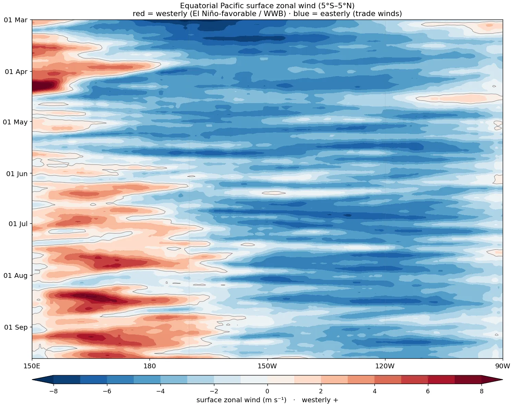
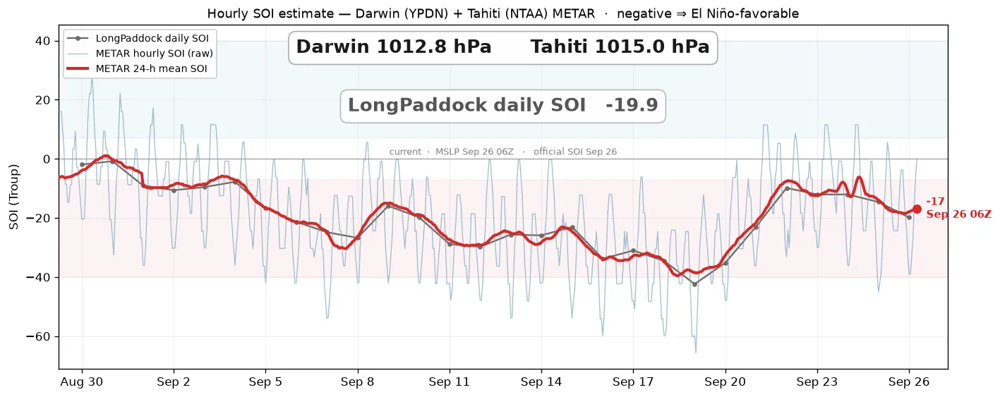
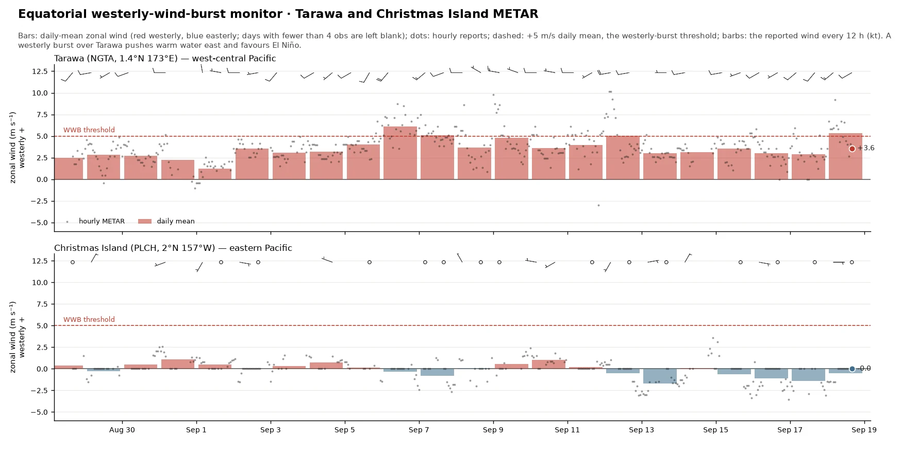
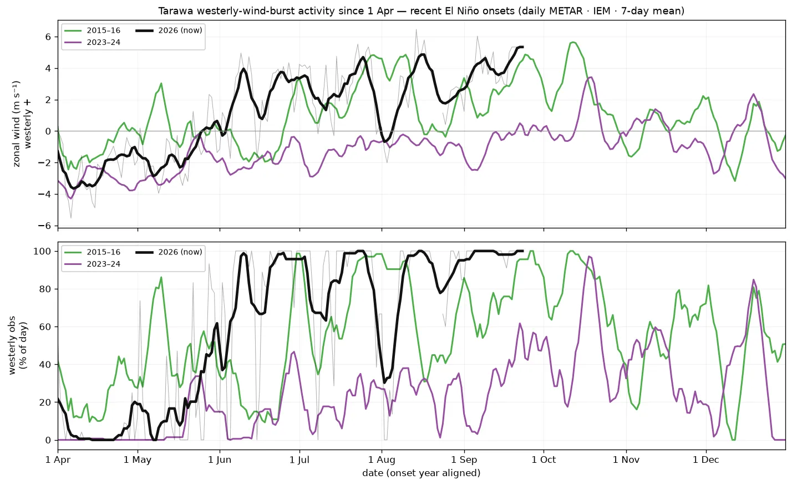

Atmospheric Response
The atmospheric side of ENSO: observed and forecast equatorial Pacific surface winds, the Southern Oscillation, and westerly-wind-burst activity.
Observed Equatorial Pacific Surface Wind
Observed Equatorial Zonal Wind: Strip / Hovmöller
Longitude × time strip of the daily-mean surface zonal wind averaged 5°S–5°N, 150°E–90°W, from the same gap-filled scatterometer (ASCAT) L4 product as the map above. Red is westerly (El Niño-favorable), blue is easterly (the trade winds). Westerly-wind bursts (red) over the warm pool force the downwelling Kelvin waves and eastward surface-current surges seen on the subsurface page. Newest day at the bottom.

Hourly SOI Estimate
The Southern Oscillation Index is a Troup standardisation of the Tahiti-minus-Darwin sea-level-pressure difference. It is published only monthly, and even LongPaddock's daily version lags 1–2 days. This estimates it in near-real time from the hourly QNH in the Darwin (YPDN) and Tahiti / Faa’a (NTAA) airport METARs, updated hourly by a GitHub Action.
The exact formula (Troup, 1965):
SOI = 10 × ( Pdiff − Pdiff ) ÷ σdiff
where Pdiff = mean-sea-level pressure at Tahiti minus Darwin (monthly mean), Pdiff is the long-term average of that difference for the given calendar month, and σdiff its standard deviation, both taken over the 1887–1989 base period. The factor of 10 is Troup’s scaling (so the index mostly falls within ±35). Crucially, σdiff is the spread of monthly values (≈1.3–2.1 hPa), not the much wider day-to-day spread; the exact monthly mean and σ are recovered by regressing LongPaddock’s published SOI against its own Tahiti−Darwin pressure record, then applied to the live METAR pressures.
The grey line is the published LongPaddock daily SOI; the bold red line is the 24-hour-mean estimate, nudged onto the LongPaddock scale, which runs a day or two ahead of it. The faint blue line is the raw hourly SOI, very noisy (the semidiurnal pressure tide, passing weather, and 1-hPa METAR rounding). Negative is El Niño-favorable.

Southern Oscillation Index Forecast
Extending the observed SOI forward: the same Troup SOI (the standardized Tahiti−Darwin sea-level-pressure difference), here forecast from the combined AIFS-ENS + IFS-ENS ensemble (about 100 members). Observed values are from LongPaddock (Queensland Govt / BoM); the forecast is the Tahiti−Darwin MSL from the ensembles, bias-corrected to the recent observed level. Bold lines are the 30-day running SOI; the faint daily series and shaded 10–90% band show the day-to-day spread. Sustained negative SOI (below −7) is El Niño-favorable; sustained positive (above +7) is La Niña-favorable.

Westerly-Wind-Burst Monitor: Tarawa
Westerly wind bursts (WWBs) over the west-central equatorial Pacific are a key El Niño trigger: the easterly trades briefly reverse to westerly, pushing warm water and convection eastward and forcing downwelling Kelvin waves. Tarawa / Bonriki (NGTA, 1.4°N 173°E) sits in that zone, so its hourly airport wind is a live proxy, with Christmas Island (PLCH, far to the east) shown for contrast. The arrows show the latest wind at each station (red is westerly, blue is easterly); the chart tracks the zonal wind component at Tarawa, where a sustained red excursion is an active WWB.

WWB Activity vs Past El Niño Onsets
Tarawa’s daily airport wind from 1 April onward through recent El Niño onset years, 2015–16 (very strong) and 2023–24 (weaker), against the current year, from the Iowa Environmental Mesonet METAR archive. Both panels are a 7-day running mean of the hourly obs: top is zonal wind (westerly positive); bottom is the fraction of each day with westerly winds. In a developing El Niño the easterly trades weaken and westerly bursts become more frequent, so both climb from the cold-state baseline.

Equatorial Pacific 10 m Wind Forecast
Forecast 10 m zonal-wind anomaly (5°S–5°N), longitude × forecast day, from the AIFS-ENS (AI) and ECMWF IFS-ENS (physics) ensemble means versus the ERA5 1991–2020 climatology. Westerly (red) anomalies along the equator favor El Niño development; easterly (blue) anomalies favor La Niña. Agreement between the AI and physics ensembles raises confidence.

Super-Ensemble MSLP & 10 m Wind Forecast
The full-field Pacific surface forecast behind the equatorial diagnostics: combined AIFS-ENS + IFS-ENS super-ensemble-mean mean-sea-level pressure (contours, with H/L centres) and 10 m wind (speed shaded in knots, plus barbs), animated day 1–15 over the tropical and subtropical Pacific. An equatorial westerly push between the Maritime Continent and the dateline is a wind-burst signature.
200 hPa Velocity Potential & Irrotational Wind
The large-scale divergent circulation aloft from the AIFS-ENS ensemble mean: the 200 hPa velocity-potential anomaly shaded, with the irrotational (divergent) wind as vectors. Green is upper-level divergence (the outflow above deep convection); orange is convergence (subsidence). The vectors point out of the divergence centres, tracing the rising and sinking branches of the Walker and Hadley circulations; in El Niño the divergence shifts east over the central Pacific. Anomaly is versus the ERA5 1991–2020 climatology. The first frame is the analysis, the rest is the forecast to day 14.
Wave Activity Flux: Where Rossby Wave Packets Are Heading
The Takaya–Nakamura (2001) wave activity flux is a phase-independent vector diagnostic of quasi-stationary Rossby wave propagation: unlike watching ridges and troughs move, the flux W points along the wave packet's group velocity — where the wave energy itself is travelling, ducted along the jet-stream waveguides — and its convergence marks where the downstream flow will amplify days later. That makes it a practical forecast tool for downstream development, blocking onset, and teleconnection excitation: watch packets radiate out of the tropical Pacific convection (the El Niño–PNA pathway) or off a mountain-torque event, arc along the subtropical jet, and pile into an amplifying ridge.
$$\mathbf{W}=\frac{p\cos\phi}{2\,|\mathbf{U}|}\begin{pmatrix}U(\psi_x'^2-\psi'\psi_{xx}')+V(\psi_x'\psi_y'-\psi'\psi_{xy}')\\[2pt]U(\psi_x'\psi_y'-\psi'\psi_{xy}')+V(\psi_y'^2-\psi'\psi_{yy}')\end{pmatrix}$$
Computed at 200 hPa from the AIFS-ENS ensemble mean at every daily lead to day 15: the streamfunction anomaly $\psi'$ (spherical-harmonic inversion of the vorticity) on the ERA5 1991–2020 day-of-year basic state $(U,V)$. Shading is the flux convergence $-\nabla\!\cdot\!\mathbf{W}$ — red marks where wave activity is piling up and the downstream flow amplifies over the following days (blue marks emission regions); grey contours are $\psi'$ (the anomalous ridges/troughs, dashed negative), arrows the wave activity flux, green contours the forecast’s own 200 hPa jet at that lead (25/35/45 m/s) — the actual waveguide the packets follow (the flux itself is evaluated on the climatological basic state, per TN01). Fluxes are masked equatorward of 20° and outside westerlies, where the quasi-stationary linear theory does not apply; the diagnostic is most meaningful for 3–10-day downstream development, not fast transients. Both hemispheres are shown — the Southern Hemisphere winter waveguide is the active one in austral winter, a view few live sites carry.
Atmospheric Angular Momentum
Relative AAM is the angular momentum carried by the winds, the atmosphere's total westerly momentum, ∫ u·cos²φ over the whole globe. It is dominated by the upper-tropospheric subtropical jets and the deep tropics (largest moment arm), shown here for the globe and each hemisphere from the AIFS-ENS winds on 14 pressure levels (10–1000 hPa — the full column, validated against the 37-level ERA5 integral and GFZ's ESMGFZ wind-term series to ~1%). The top panel is this year's observed AAM (black) and the 15-day forecast (red) on the climatological annual cycle; the hemispheres are strongly out of phase (each peaks in its own winter). The bottom panel is the anomaly (departure from the 1991–2020 normal), which removes the seasonal cycle. El Niño strengthens the subtropical jets and weakens the trades, so the atmosphere holds more westerly momentum; conservation then requires the solid Earth to slow, so AAM ties directly to the measured length of day. The green trace is GFZ's independent ESMGFZ wind-term series (computed from ECMWF's operational analyses for the Earth-rotation community) — a continuous external check on this pipeline.

AAM Forecast Trend (run-to-run)

AAM Phase: Where the Momentum Is, and Where It’s Going
Top: relative AAM integrated in 1.5° latitude bands — ~3 months observed (ERA5) plus the 15-day AIFS-ENS mean forecast — so poleward-propagating westerly anomalies and building subtropical momentum show as slanted warm streaks. Bottom: each hemisphere's trajectory through (AAM anomaly, tendency) phase space, the hemispheric analog of the Weickmann–Berry global wind oscillation orbit: grey trail = last 75 days, red = the forecast. The headline sentence is generated automatically from the forecast quadrant and the latitude band driving the change — e.g. "NH: rising above-normal AAM — subtropical westerlies increasing."

What Drives AAM: the Torque Budget
Atmospheric angular momentum only changes through torques the Earth exerts on the atmosphere. With $M$ the relative (wind) AAM, the budget has two resolved terms, friction (surface wind stress) and mountain (pressure on topography):
$$M=\frac{a^3}{g}\iiint u\cos^2\!\phi\;d\lambda\,d\phi\,dp,\qquad \frac{dM}{dt}=T_{\text{fric}}+T_{\text{mtn}}\;(+\,T_{\text{gw}})$$
$$T_{\text{mtn}}=-a^2\!\iint p_s\,\frac{\partial h_s}{\partial\lambda}\,\cos\phi\;d\lambda\,d\phi,\qquad T_{\text{fric}}=-a^3\!\iint \tau_\lambda\,\cos^2\!\phi\;d\lambda\,d\phi$$
The two panels show the torque anomalies (versus the ERA5 1991–2020 climatology, by day-of-year), so the standing El Niño departure shows alongside the day-to-day synoptic systems. The grey contours are the surface-pressure anomaly, the field the torque uses (solid positive, dashed negative), so colours and contours read together. Top, friction ($\tau_\lambda\!\approx\!\rho\,C_d\,|V_{10}|\,u_{10}$): trade-wind and jet stress anomalies such as western-Pacific westerly bursts. Bottom, mountain (form drag $h_s\,\partial p_s/\partial\lambda$, the same net torque as $-p_s\,\partial h_s/\partial\lambda$): synoptic pressure systems crossing the Andes, Rockies, Himalaya/Tibet and Greenland. Insets are the ±60° cosφ-weighted zonal-mean anomaly; AIFS-ENS ensemble mean of all 51 members, ~5°. The sub-grid gravity-wave-drag term $T_{\text{gw}}$ appears only as the residual.


E–P Flux & Wave Driving: the Force Behind the Momentum Budget
Where the torque budget shows how the Earth exchanges angular momentum with the atmosphere at the surface, the Eliassen–Palm flux shows how the waves redistribute it internally — the same quasi-geostrophic diagnostic used to diagnose sudden stratospheric warmings, computed live from AIFS-ENS and stepped through the full 15-day forecast.
How to read it: arrows are the E–P flux of planetary waves (zonal wavenumbers 1–3) — Fφ from the momentum flux [u′v′], Fp from the heat flux [v′θ′] — pointing along the wave packets' group velocity: up = wave activity climbing into the stratosphere, equatorward = venting toward the tropics. Shading is the flux divergence as a zonal force: purple = convergence = wave drag decelerating the zonal-mean wind (sustained purple on the winter polar-night jet's flank is the engine of a sudden stratospheric warming, and the deceleration that pumps AAM out of the fast westerlies); orange = acceleration. Thin contours: zonal-mean wind every 10 m s⁻¹, with the u = 0 critical line bold. The dashed magenta contour is the wave-1 Charney–Drazin ceiling, $\bar{u} = U_c$: between it and the black u = 0 line lies the corridor where wave-1 can propagate vertically. Where the ceiling sits low over the winter jet, wave activity is trapped beneath it and vents equatorward — watch it lift as the jet weakens toward spring, opening the vortex to attack from below. Step through the loop to watch the model move wave-driving episodes through the forecast.
Charney–Drazin filtering, in brief: planetary waves generated in the troposphere (by mountains and land–sea heating contrasts) can propagate vertically only through westerlies that are neither too weak nor too strong: $0 < \bar{u} < U_c$, with the ceiling $U_c = \beta\,[\,k^2 + l^2 + f^2/(4N^2H^2)\,]^{-1}$ shrinking as the wavenumber grows. Three famous consequences follow. Easterlies block everything — the summer stratosphere is wave-free and undisturbed. Only the longest waves (zonal wavenumbers 1–2) clear the ceiling in winter westerlies — the stratosphere sees planetary waves while the synoptic-scale weather is filtered out, and sudden stratospheric warmings are always wave-1/2 events. And a strong enough jet blocks even wave-1 ($\bar{u} > U_c$): the midwinter Southern Hemisphere polar-night jet exceeds the ceiling, so wave activity deposits its drag near the tropopause and vents equatorward instead of reaching the vortex — which is why major SH warmings are nearly nonexistent, and why the seasonal windows for vortex disruption are early/late winter, when the jet sits inside the propagation range. The dashed magenta line above is exactly this criterion — $\bar{u} = U_c$ for wave-1 with the standard meridional scale — evaluated on the live flow.
Stationary Wave-1: the Forcing Behind the Wave Driving
The E–P flux above shows where planetary-wave activity is going; this shows how much of it there is, and whether it's amplifying. Top: wavenumber-1 amplitude of geopotential height in the 55–65° band at 500 / 100 / 10 hPa through the 15-day forecast (wave-2 dashed) — the vortex-forcing gauge. Below: the wave itself, as a longitude–height section per hemisphere — a single sine wave per level, animated through the forecast.

How to read the sections: amplitude must grow with height like ρ−½ for a propagating wave (thinning air, conserved energy) — a wave-1 that's tens of metres at 500 hPa becomes hundreds at 10 hPa. The westward tilt of the phase lines with height is the visual signature of upward wave-activity flux (it is the poleward eddy heat flux, the Fp term in the E–P diagnostic): tilted = pumping the stratosphere, upright = barotropic and trapped, sheared-off top = the Charney–Drazin ceiling doing its work. Watch the winter hemisphere's wave amplify, tilt, and penetrate — or collapse — through the forecast.
Where the AAM Lives, and Where It’s Changing
The torques above change the global AAM; this shows where that angular momentum sits and how the forecast moves it, as a latitude–pressure cross-section of the relative-AAM density whose integral over latitude and pressure is the global AAM. Top panel, absolute: where the AAM resides, dominated by the subtropical jets (the winter hemisphere’s is strongest). Bottom, change versus the 0-h analysis: where the forecast is adding (red) or removing (blue) angular momentum, with the per-latitude breakdown of the global ΔAAM along the top strip. Black contours are the zonal-mean zonal wind (bold = zero). The bottom panel integrates to the ΔAAM in the title, tying it back to the torque budget above. AIFS-ENS 50-member ensemble mean; the slider steps the forecast Day 0–15.
Meridional Overturning: the Hadley Cell Response
The zonal-mean meridional mass streamfunction $\Psi(\phi,p)$ traces the overturning cells (Hadley, Ferrel, polar) from the AIFS-ENS 0-h analysis:
$$\Psi(\phi,p)=\frac{2\pi a\cos\phi}{g}\int_0^p [v]\,dp',\qquad [v]=\text{zonal-mean }v$$
Shown as the anomaly $\Psi'$ from the ERA5 1991–2020 harmonic climatology (mean + annual + semiannual, by day-of-year), how the overturning departs from its normal seasonal state. The black contours are the absolute $\Psi$ (the actual cells) and the arrows show the vertical motion (up is ascent, scaled by strength); the strong equatorial signal tracks the El Niño Walker/Hadley response. Each frame is a 7-day running mean (the 0-h analyses are stashed into a rolling history and trailing-week-averaged), which smooths the day-to-day wobble so the evolution of the Hadley-cell strength is legible. Fixed colour scale.
Zonal Overturning: the Walker Circulation
The equatorial companion to the Hadley-cell plot above: the zonal overturning streamfunction $\Psi_W(\lambda,p)$ built from the 5°S–5°N divergent zonal wind (velocity-potential decomposition, so the rotational flow that dwarfs it near the equator is removed):
$$\Psi_W(\lambda,p)=\frac{\Delta y}{g}\int_0^p u_D\,dp',\qquad u_D=\text{5°S–5°N divergent }u$$
Colour is the anomaly from the ERA5 1991–2020 harmonic climatology; black contours are the absolute cells (ascent where $\Psi_W$ increases eastward — arrows show the vertical branches). The headline Pacific Walker cell index is the mean $\Psi_W$ over 140°E–160°W, 300–700 hPa: on ERA5 Decembers it runs about +0.3…+0.4×10¹⁰ kg/s in La Niña and reverses sign (−0.1) in the 1982/1997/2015 super El Niños — a direct, mass-flux measure of how far the Walker circulation has collapsed. Each frame is a 7-day trailing mean of the 0-h analyses.
Subtropical Jets: Strength & Position vs Normal
El Niño's most robust extratropical signature is a stronger, equatorward-shifted subtropical jet in each winter hemisphere. Top: the zonal-mean zonal wind $[u](\phi,p)$ at the analysis — colour is the anomaly against the ERA5 1991–2020 day-of-year normal, contours the absolute jets, ▼ the 200 hPa subtropical cores. Below: the forecast evolution of each core's speed and latitude (max $[u]$ at 200 hPa within 15–45°), ensemble members and mean against the climatological normal ±1σ band, with the analysis departure quoted in σ — the "how anomalous are the jets right now" number. The animation steps the ensemble-mean cross-section through the 15-day forecast (▼ forecast cores, ▽ their climatological positions).